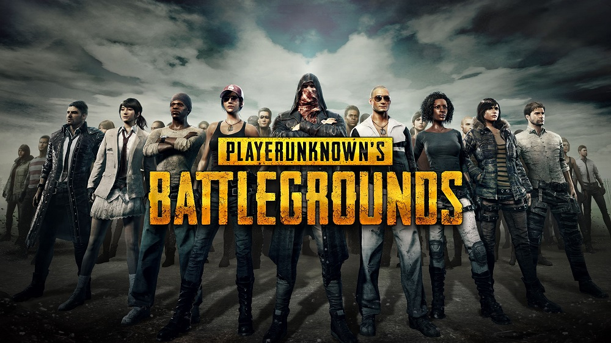

|  |
PlayerUnknown's Battlegrounds (PUBG) is a multiplayer online battle royale video game developed and published by PUBG Corp., a subsidiary of Korean publisher Bluehole. The game is based on previous mods that were developed by Brendan "PlayerUnknown" Greene for other games using the 2000 film Battle Royale for inspiration, and expanded into a standalone game under Greene's creative direction. In the game, up to one hundred players parachute onto an island and scavenge for weapons and equipment to kill others while avoiding getting killed themselves. The available safe area of the game's map decreases in size over time, directing surviving players into tighter areas to force encounters. The last player or team standing wins the round. |